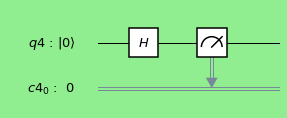
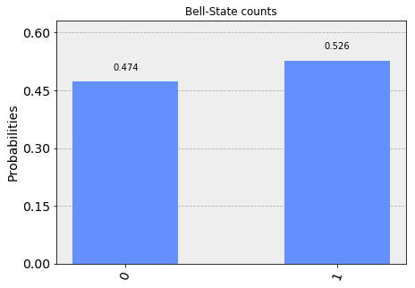
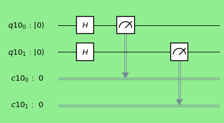
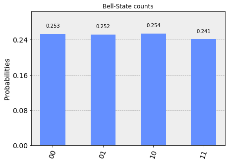
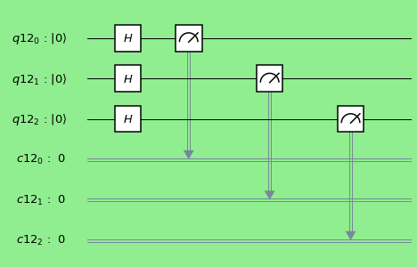
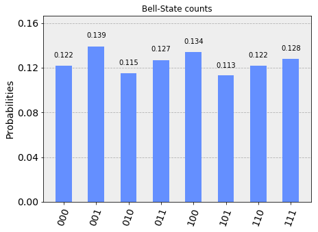
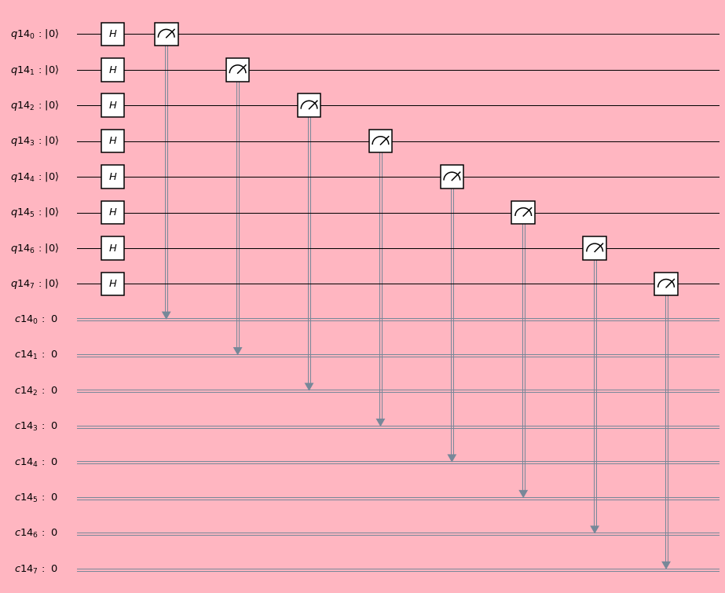
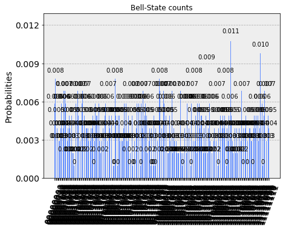

Hadamard Gate and Circuits
Hadamard gate is single qubit operator. This transforms |0> state to a superposed state \(\frac{1}{\sqrt{2}}|0> + \frac{1}{\sqrt{2}}|1>\) and stae|1> to a superposed state \(\frac{1}{\sqrt{2}}|0> - \frac{1}{\sqrt{2}}|1>\). This gate is very important gate to construct Bell state, Quantum Fourier Transform (QFT) and many more.
Import python library to perform computation in 'Qiskit' environment.
%matplotlib inline # Importing standard Qiskit libraries and configuring account from qiskit import QuantumCircuit, QuantumRegister,ClassicalRegister from qiskit import execute, Aer, IBMQ from qiskit.compiler import transpile, assemble from qiskit.tools.jupyter import * from qiskit.visualization import * from qiskit.providers.aer import UnitarySimulator
Hadamard Gate (1 qubit)
Design the single Hadamard gate quantum circuit.
n =1 q = QuantumRegister(n) c = ClassicalRegister(n) circ = QuantumCircuit(q,c) circ.h(q[0]) circ.measure(q,c) # Change the background color in mpl style = {'backgroundcolor': 'lightgreen'} circ.draw(output='mpl', style = style)

Manual approach:
- Initial state: |0>
- After Hadamard Gate: \(\frac{1}{\sqrt{2}}|0> + \frac{1}{\sqrt{2}}|1>\)
Algebra:
$$ H = \frac{1}{\sqrt{2}} \begin{bmatrix} 1 & 1 \\ 1 & -1 \end{bmatrix}; |1 > = \begin{bmatrix} 1 \\ 0 \end{bmatrix} ; |0> = \begin{bmatrix} 0\\ 1 \end{bmatrix}$$
Simulation
simulator = Aer.get_backend('qasm_simulator') result = execute(circ, simulator).result() counts = result.get_counts(circ) plot_histogram(counts, title='Bell-State counts')

Unitary representation
n =1 q = QuantumRegister(n) c = ClassicalRegister(n) circ = QuantumCircuit(q,c) circ.h(q[0]) # Select the UnitarySimulator from the Aer provider simulator = Aer.get_backend('unitary_simulator') # Execute and get counts result = execute(circ, simulator).result() unitary = result.get_unitary(circ) print( unitary)
[[ 0.70710678+0.j 0.70710678+0.j] [ 0.70710678+0.j -0.70710678+0.j]]
Hadamard Gate (2 qubits)
Lets perform three different configurations of quantum circuit with two qubits and Hadamard gates.
Type -I : Hadamard gate on first qubit
$$I \otimes H = \begin{bmatrix} 1 & 0 \\ 0 & 1 \end{bmatrix} \otimes \frac{1}{\sqrt{2}} \begin{bmatrix} 1 & 1 \\ 1 & -1 \end{bmatrix} = \frac{1}{\sqrt{2}}\begin{bmatrix} 1 & 1 & 0 & 0\\ 1 & -1 & 0 & 0\\ 0 & 0 & 1 & 1 \\ 0 & 0 & 1 & -1 \end{bmatrix} $$
Design circuit with two qubit with Hadamard on first qubit and perform the measurement.
n =2 q = QuantumRegister(n) c = ClassicalRegister(n) circ = QuantumCircuit(q,c) circ.h(q[0]) circ.measure(q,c) # Change the background color in mpl style = {'backgroundcolor': 'lightgreen'} circ.draw(output='mpl', style = style)

Unitary representation
n =2 q = QuantumRegister(n) c = ClassicalRegister(n) circ = QuantumCircuit(q,c) circ.h(q[0]) # Select the UnitarySimulator from the Aer provider simulator = Aer.get_backend('unitary_simulator') # Execute and get counts result = execute(circ, simulator).result() unitary = result.get_unitary(circ) print( unitary)
[[ 0.70710678+0.j 0.70710678+0.j 0. +0.j 0. +0.j] [ 0.70710678+0.j -0.70710678+0.j 0. +0.j 0. +0.j] [ 0. +0.j 0. +0.j 0.70710678+0.j 0.70710678+0.j] [ 0. +0.j 0. +0.j 0.70710678+0.j -0.70710678+0.j]]
Type -II : Hadamard on second qubit
$$ H \otimes I = \frac{1}{\sqrt{2}} \begin{bmatrix} 1 & 1 \\ 1 & -1 \end{bmatrix} \otimes \begin{bmatrix} 1 & 0 \\ 0 & 1 \end{bmatrix} = \frac{1}{\sqrt{2}}\begin{bmatrix} 1 & 0 & 1 & 0\\ 0 & 1 & 0 & 1\\ 1 & 0 & -1 & 0 \\ 0 & 1 & 0 & -1 \end{bmatrix} $$
Design a quantum circuit with two qubits and Hadamard gate on first qubit. Perform the measurement.
n =2 q = QuantumRegister(n) c = ClassicalRegister(n) circ = QuantumCircuit(q,c) circ.h(q[1]) circ.measure(q,c) # Change the background color in mpl style = {'backgroundcolor': 'lightgreen'} circ.draw(output='mpl', style = style)

Unitary representation
n =2 q = QuantumRegister(n) c = ClassicalRegister(n) circ = QuantumCircuit(q,c) circ.h(q[1]) # Select the UnitarySimulator from the Aer provider simulator = Aer.get_backend('unitary_simulator') # Execute and get counts result = execute(circ, simulator).result() unitary = result.get_unitary(circ) print( unitary)
[[ 0.70710678+0.j 0. +0.j 0.70710678+0.j 0. +0.j] [ 0. +0.j 0.70710678+0.j 0. +0.j 0.70710678+0.j] [ 0.70710678+0.j 0. +0.j -0.70710678+0.j 0. +0.j] [ 0. +0.j 0.70710678+0.j 0. +0.j -0.70710678+0.j]]
Type -III : Hadamard gate on both qubits
$$ H_1 \otimes H_1 = \frac{1}{\sqrt{2}}\begin{bmatrix} 1 & 1 \\ 1 & -1 \end{bmatrix} \otimes \frac{1}{\sqrt{2}}\begin{bmatrix} 1 & 1 \\ 1 & -1 \end{bmatrix} = \frac{1}{2} \begin{bmatrix} 1 & 1 & 1 & 1 \\ 1 & -1 & 1 & -1 \\ 1 & 1 & -1 & -1 \\ 1 & -1 & -1 & 1 \\ \end{bmatrix}$$
Design the quantum circuit with two Hadamard gates and perform measurement.
n =2 q = QuantumRegister(n) c = ClassicalRegister(n) circ = QuantumCircuit(q,c) circ.h(q[0]) circ.h(q[1]) circ.measure(q,c) # Change the background color in mpl style = {'backgroundcolor': 'lightgreen'} circ.draw(output='mpl', style = style)

Manual approach
- Initial state: |00>
- After Hadamard Gate: \(\frac{1}{\sqrt{2}}|00> + \frac{1}{\sqrt{2}}|10>\)
- After Hadamard Gate: \(\frac{1}{{2}}|00> + \frac{1}{{2}}|01> + \frac{1}{{2}}|10> + \frac{1}{{2}}|11>\)
- This is tensor product of two Hadamard transform: \(H|0>_A \otimes H|0>_B\)
- i.e., \((\frac{1}{\sqrt{2}}|0> + \frac{1}{\sqrt{2}}|1>) \otimes (\frac{1}{\sqrt{2}}|0> + \frac{1}{\sqrt{2}}|1>) = \frac{1}{{2}}|00> + \frac{1}{{2}}|01> + \frac{1}{{2}}|10> + \frac{1}{{2}}|11> \)
Tensor Algebra:
- H operator in product space, \(H_2 = H_1 \otimes H_1\) :
$$\frac{1}{\sqrt{2}}\begin{bmatrix} 1 & 1 \\ 1 & -1 \end{bmatrix} \otimes \frac{1}{\sqrt{2}}\begin{bmatrix} 1 & 1 \\ 1 & -1 \end{bmatrix} = \frac{1}{2} \begin{bmatrix} 1 & 1 & 1 & 1 \\ 1 & -1 & 1 & -1 \\ 1 & 1 & -1 & -1 \\ 1 & -1 & -1 & 1 \\ \end{bmatrix}$$
- Basis States in product space, \(|q_1q_2> = q_1 \otimes q_2\) :
$$|00> = \begin{bmatrix} 1 \\ 0 \\ 0\\ 0 \end{bmatrix} ; |01> = \begin{bmatrix} 0\\ 1\\ 0\\ 0 \end{bmatrix} ; |10> = \begin{bmatrix} 0 \\ 0 \\ 1\\ 0 \end{bmatrix} ; |11> = \begin{bmatrix} 0\\ 0\\ 0\\ 1 \end{bmatrix}$$
- Linear transformation in product space:
Above transformation can be represented as :
$$H_2|00> = \frac{1}{{2}}|00> + \frac{1}{{2}}|01> + \frac{1}{{2}}|10> + \frac{1}{{2}}|11>$$
With above basis vector, a state \( \frac{1}{{2}}|00> + \frac{1}{{2}}|01> + \frac{1}{{2}}|10> + \frac{1}{{2}}|11>\) can be expressed as: $$\begin{bmatrix} \frac{1}{2} \\ \frac{1}{2} \\ \frac{1}{2}\\ \frac{1}{2} \end{bmatrix}$$
Thus in Matrix Form:
$$ H_2|00> = \frac{1}{2} \begin{bmatrix}
1 & 1 & 1 & 1 \\
1 & -1 & 1 & -1 \\
1 & 1 & -1 & -1 \\
1 & -1 & -1 & 1 \\
\end{bmatrix}\begin{bmatrix}
1 \\
0 \\
0\\
0
\end{bmatrix}
= \begin{bmatrix}
\frac{1}{2} \\
\frac{1}{2} \\
\frac{1}{2}\\
\frac{1}{2}
\end{bmatrix}$$
$$= \frac{1}{{2}}|00> + \frac{1}{{2}}|01> + \frac{1}{{2}}|10> + \frac{1}{{2}}|11> $$
Tensor product of linear map:
The tensor product also operates on linear maps between vector spaces. Specifically, given two linear maps \(𝑆:𝑉→𝑋\) and \(𝑇:𝑊→𝑌\) between vector spaces, the tensor product of the two linear maps 𝑆 and 𝑇 is a linear map
\((𝑆 \otimes 𝑇)(v \otimes w) = 𝑆(v) \otimes 𝑇(w) \).
Simulation
simulator = Aer.get_backend('qasm_simulator') result = execute(circ, simulator).result() counts = result.get_counts(circ) plot_histogram(counts, title='Bell-State counts')

Unitary representation
n =2 q = QuantumRegister(n) c = ClassicalRegister(n) circ = QuantumCircuit(q,c) circ.h(q[0]) circ.h(q[1]) # Select the UnitarySimulator from the Aer provider simulator = Aer.get_backend('unitary_simulator') # Execute and get counts result = execute(circ, simulator).result() unitary = result.get_unitary(circ) print( unitary)
[[ 0.5+0.j 0.5+0.j 0.5+0.j 0.5+0.j] [ 0.5+0.j -0.5+0.j 0.5+0.j -0.5+0.j] [ 0.5+0.j 0.5+0.j -0.5+0.j -0.5+0.j] [ 0.5+0.j -0.5+0.j -0.5+0.j 0.5+0.j]]
Multiple Hadamard gates (3 qubits)
Desigh the quantum circuit and perform measurement
n = 3 q = QuantumRegister(n) c = ClassicalRegister(n) circ = QuantumCircuit(q,c) circ.h(q[0]) circ.h(q[1]) circ.h(q[2]) circ.measure(q,c) # Change the background color in mpl style = {'backgroundcolor': 'lightgreen'} circ.draw(output='mpl', style = style)

Manual approach
- Initial state: |000>
- After Hadamard gate on first qubit: \( \frac{1}{\sqrt{2}}|000> + \frac{1}{\sqrt{2}}|100> \)
- After Hadamard gate on second qubit: \(\frac{1}{{2}}|000> + \frac{1}{{2}}|010> + \frac{1}{{2}}|100> + \frac{1}{{2}}|110>\)
- After Hadamard gate on third qubit: \( \frac{1}{2\sqrt{2}}(|000> + |001> + |010> + |011> + |100> + |101> + |110> + |111>) \)
which is equivalent to
\((\frac{1}{\sqrt{2}}|0> + \frac{1}{\sqrt{2}}|1>) \otimes (\frac{1}{\sqrt{2}}|0> + \frac{1}{\sqrt{2}}|1>) \otimes (\frac{1}{\sqrt{2}}|0> + \frac{1}{\sqrt{2}}|1>) \)
Tensor Algebra:
- H operator in product space: \( H_3 = H_1 \otimes H_1 \otimes H_1 = H_2 \otimes H_1\):
$$ \frac{1}{\sqrt{2}}\begin{bmatrix} 1 & 1 \\ 1 & -1 \end{bmatrix} \otimes \frac{1}{\sqrt{2}}\begin{bmatrix} 1 & 1 \\ 1 & -1 \end{bmatrix} \otimes \frac{1}{\sqrt{2}}\begin{bmatrix} 1 & 1 \\ 1 & -1 \end{bmatrix} = \frac{1}{2} \begin{bmatrix} 1 & 1 & 1 & 1 \\ 1 & -1 & 1 & -1 \\ 1 & 1 & -1 & -1 \\ 1 & -1 & -1 & 1 \\ \end{bmatrix} \otimes \frac{1}{\sqrt{2}}\begin{bmatrix} 1 & 1 \\ 1 & -1 \end{bmatrix}$$
$$ = \frac{1}{2\sqrt{2}} \begin{bmatrix} 1 & 1 & 1 & 1 & 1 & 1 & 1 & 1 \\ 1 & -1 & 1 & -1 & 1 & -1 & 1 & -1 \\ 1 & 1 & -1 & -1 & 1 & 1 & -1 & -1 \\ 1 & -1 & -1 & 1 & 1 & -1 & -1 & 1 \\ 1 & 1 & 1 & 1 & -1 & -1 & -1 & -1 \\ 1 & -1 & 1 & -1 & -1 & 1 & -1 & 1 \\ 1 & 1 & -1 & -1 & -1 & -1 & 1 & 1 \\ 1 & -1 & -1 & 1 & -1 & 1 & 1 & -1 \\ \end{bmatrix}$$
- Basis states in product space: \( |q_1q_2q_3> = q_1 \otimes q_2 \otimes q_3\) :
$$ |000> = \begin{bmatrix} 1 \\ 0 \\ 0\\ 0\\ 0\\ 0\\ 0\\ 0\\ \end{bmatrix} ; |001> = \begin{bmatrix} 0\\ 1\\ 0\\ 0\\ 0\\ 0\\ 0\\ 0 \end{bmatrix}; |010> = \begin{bmatrix} 0\\ 0\\ 1\\ 0\\ 0\\ 0\\ 0\\ 0 \end{bmatrix}; |011> = \begin{bmatrix} 0\\ 0\\ 0\\ 1\\ 0\\ 0\\ 0\\ 0 \end{bmatrix}; |100> = \begin{bmatrix} 0\\ 0\\ 0\\ 0\\ 1\\ 0\\ 0\\ 0 \end{bmatrix}$$
$$ |101> = \begin{bmatrix} 0\\ 0\\ 0\\ 0\\ 0\\ 1\\ 0\\ 0 \end{bmatrix}; |110> = \begin{bmatrix} 0\\ 0\\ 0\\ 0\\ 0\\ 0\\ 1\\ 0 \end{bmatrix}; |111> = \begin{bmatrix} 0\\ 0\\ 0\\ 0\\ 0\\ 0\\ 0\\ 1 \end{bmatrix}$$
- Above transformation can be represented as : \( H_3|000> = \frac{1}{2\sqrt{2}}(|000> + |001> + |010> + |011> + |100> + |101> + |110> +|111>)\). With above basis vector this quantum state can be expressed as:
$$\begin{bmatrix} \frac{1}{2\sqrt{2}} \\ \frac{1}{2\sqrt{2}} \\ \frac{1}{2\sqrt{2}}\\ \frac{1}{2\sqrt{2}}\\ \frac{1}{2\sqrt{2}} \\ \frac{1}{2\sqrt{2}} \\ \frac{1}{2\sqrt{2}}\\ \frac{1}{2\sqrt{2}} \end{bmatrix}$$
Thus in Matrix Form:
$$ H_3|000> = \frac{1}{2\sqrt{2}} \begin{bmatrix}
1 & 1 & 1 & 1 & 1 & 1 & 1 & 1 \\
1 & -1 & 1 & -1 & 1 & -1 & 1 & -1 \\
1 & 1 & -1 & -1 & 1 & 1 & -1 & -1 \\
1 & -1 & -1 & 1 & 1 & -1 & -1 & 1 \\
1 & 1 & 1 & 1 & -1 & -1 & -1 & -1 \\
1 & -1 & 1 & -1 & -1 & 1 & -1 & 1 \\
1 & 1 & -1 & -1 & -1 & -1 & 1 & 1 \\
1 & -1 & -1 & 1 & -1 & 1 & 1 & -1 \\
\end{bmatrix} \begin{bmatrix}
1 \\
0 \\
0\\
0\\
0\\
0\\
0\\
0
\end{bmatrix}
= \begin{bmatrix}
\frac{1}{2\sqrt{2}} \\
\frac{1}{2\sqrt{2}} \\
\frac{1}{2\sqrt{2}}\\
\frac{1}{2\sqrt{2}}\\
\frac{1}{2\sqrt{2}} \\
\frac{1}{2\sqrt{2}} \\
\frac{1}{2\sqrt{2}}\\
\frac{1}{2\sqrt{2}}
\end{bmatrix} $$
$$ = \frac{1}{2\sqrt{2}}(|000> + |001> + |010> + |011> + |100> + |101> + |110> +|111>)$$
Simulation
simulator = Aer.get_backend('qasm_simulator') result = execute(circ, simulator).result() counts = result.get_counts(circ) plot_histogram(counts, title='Bell-State counts')

Unitary representation
n =3 q = QuantumRegister(n) c = ClassicalRegister(n) circ = QuantumCircuit(q,c) circ.h(q[0]) circ.h(q[1]) circ.h(q[2]) # Select the UnitarySimulator from the Aer provider simulator = Aer.get_backend('unitary_simulator') # Execute and get counts result = execute(circ, simulator).result() unitary = result.get_unitary(circ) print( unitary)
[[ 0.35355339+0.j 0.35355339+0.j 0.35355339+0.j 0.35355339+0.j 0.35355339+0.j 0.35355339+0.j 0.35355339+0.j 0.35355339+0.j] [ 0.35355339+0.j -0.35355339+0.j 0.35355339+0.j -0.35355339+0.j 0.35355339+0.j -0.35355339+0.j 0.35355339+0.j -0.35355339+0.j] [ 0.35355339+0.j 0.35355339+0.j -0.35355339+0.j -0.35355339+0.j 0.35355339+0.j 0.35355339+0.j -0.35355339+0.j -0.35355339+0.j] [ 0.35355339+0.j -0.35355339+0.j -0.35355339+0.j 0.35355339+0.j 0.35355339+0.j -0.35355339+0.j -0.35355339+0.j 0.35355339+0.j] [ 0.35355339+0.j 0.35355339+0.j 0.35355339+0.j 0.35355339+0.j -0.35355339+0.j -0.35355339+0.j -0.35355339+0.j -0.35355339+0.j] [ 0.35355339+0.j -0.35355339+0.j 0.35355339+0.j -0.35355339+0.j -0.35355339+0.j 0.35355339+0.j -0.35355339+0.j 0.35355339+0.j] [ 0.35355339+0.j 0.35355339+0.j -0.35355339+0.j -0.35355339+0.j -0.35355339+0.j -0.35355339+0.j 0.35355339+0.j 0.35355339+0.j] [ 0.35355339+0.j -0.35355339+0.j -0.35355339+0.j 0.35355339+0.j -0.35355339+0.j 0.35355339+0.j 0.35355339+0.j -0.35355339+0.j]]
Multiple Hadamard gates (8 Qubits)
Quantum Circuit
n = 8 q = QuantumRegister(n) c = ClassicalRegister(n) circ = QuantumCircuit(q,c) for k in range(8): circ.h(q[k]) circ.measure(q,c) # Change the background color in mpl style = {'backgroundcolor': 'lightpink'} circ.draw(output='mpl', style = style)

Simulation
simulator = Aer.get_backend('qasm_simulator') result = execute(circ, simulator).result() counts = result.get_counts(circ) plot_histogram(counts, title='Bell-State counts')

Unitary representation
n =8 q = QuantumRegister(n) c = ClassicalRegister(n) circ = QuantumCircuit(q,c) for k in range(8): circ.h(q[k]) # Select the UnitarySimulator from the Aer provider simulator = Aer.get_backend('unitary_simulator') # Execute and get counts result = execute(circ, simulator).result() unitary = result.get_unitary(circ) print( unitary)
[[ 0.0625+0.j 0.0625+0.j 0.0625+0.j ... 0.0625+0.j 0.0625+0.j 0.0625+0.j] [ 0.0625+0.j -0.0625+0.j 0.0625+0.j ... -0.0625+0.j 0.0625+0.j -0.0625+0.j] [ 0.0625+0.j 0.0625+0.j -0.0625+0.j ... 0.0625+0.j -0.0625+0.j -0.0625+0.j] ... [ 0.0625+0.j -0.0625+0.j 0.0625+0.j ... -0.0625+0.j 0.0625+0.j -0.0625+0.j] [ 0.0625+0.j 0.0625+0.j -0.0625+0.j ... 0.0625+0.j -0.0625+0.j -0.0625+0.j] [ 0.0625+0.j -0.0625+0.j -0.0625+0.j ... -0.0625+0.j -0.0625+0.j 0.0625+0.j]]
unitary.shape
(256, 256)
The End
Reference:
- https://quantumcomputing.stackexchange.com/questions/2270/how-to-input-2-qubits-in-2-hadamard-gates